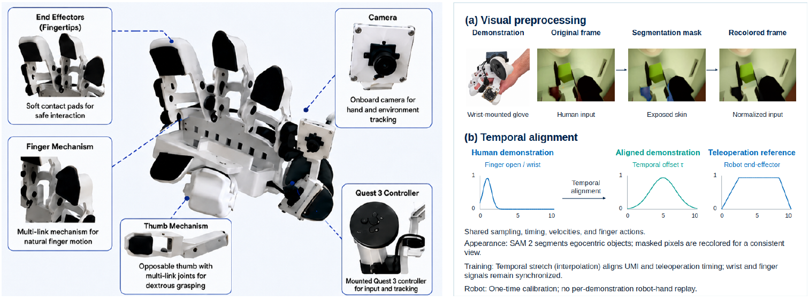

8th Robot Learning Workshop at NeurIPS 2026
Democratizing Data-Efficient Robot Learning with Robot-Free Demonstrations
Manual Cognition

Abstract
Collecting demonstrations by teleoperation occupies the target robot and can be substantially slower than natural human manipulation. MC-DexHand pairs a wearable sensing glove with a robot hand that has eight active degrees of freedom. The glove records wrist-camera images, wrist motion and finger angles while an operator handles objects directly. The glove components cost about $80, or $430 with the Quest tracking kit.
We adapt these recordings offline by recoloring exposed skin and aligning the timing to the target arm. Each new demonstration can then enter the training set without a physical replay. On two real-robot tasks, policies trained from 150 glove demonstrations per task achieved 75–80% success across ACT and GR00T.
From glove to robot
Two measured joint angles per finger group map to the corresponding actuators on the robot hand. A wrist camera and a six-degree-of-freedom tracker capture what the operator sees from the wrist and how the hand moves.

Ten teleoperated trajectories calibrate execution speed once per arm. The same time transformation is applied to video, wrist poses and finger actions so they stay synchronized. These calibration trajectories are separate from the demonstrations used to train the policies.
Real-robot results
We trained each policy on 150 glove demonstrations per task and evaluated it over 20 physical trials. Cube in Cup requires picking up a 2.5 cm cube and placing it in a cup. Egg Carton requires the fingers to stabilize the carton while the thumb releases its latch.
| Task | ACT | GR00T |
|---|---|---|
| Cube in Cup | 80% | 75% |
| Egg Carton | 75% | 80% |
On Cube in Cup, 240 glove demonstrations took about as long to collect as 60 teleoperated demonstrations. With those datasets, ACT achieved 95% success using either collection method. GR00T reached 90% with glove data and 95% with teleoperation. See Table 3 in the paper.
BibTeX
Download .bib